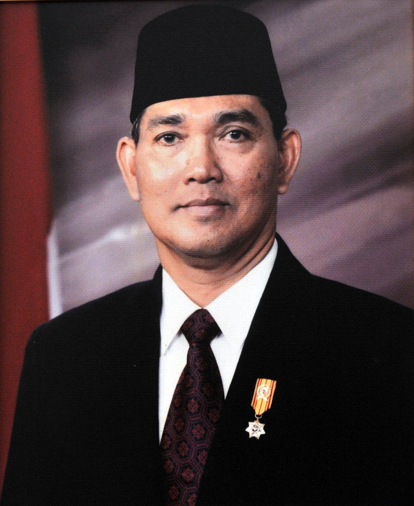

Try Sutrisno 
| Lahir | : | 15 November 1935 (umur 87) |
| Profesi | : | Tentara, politisi |
Jenderal TNI (Purn.) H. Try Sutrisno (lahir 15 November 1935) adalah Wakil Presiden Indonesia ke-6 periode 1993-1998. Sebelum diangkat sebagai Wakil Presiden Indonesia, Try menjabat sebagai Panglima Angkatan Bersenjata Republik Indonesia (ABRI).
Try Sutrisno lahir pada 15 November 1935 di Surabaya, Jawa Timur. Ayahnya Subandi adalah sopir ambulans, dan ibunya Mardiyah adalah ibu rumah tangga. Setelah Proklamasi Kemerdekaan Indonesia, Belanda kembali untuk mengklaim kembali Indonesia sebagai koloni mereka. Try Sutrisno dan keluarganya pindah dari Surabaya ke Mojokerto. Ayahnya bekerja sebagai petugas medis untuk Batalyon Angkatan Darat Poncowati, memaksa Try Sutrisno untuk berhenti sekolah dan mencari nafkah sebagai penjual rokok dan penjual koran.
Kehidupan Saat Masa Orde Baru
Karier Militer
Karier militer Try Sutrisno mencerminkan prestasi dan dedikasinya dalam dinas militer Indonesia. Ia naik pangkat hingga mencapai tingkat tertinggi, Jenderal Besar (Marsekal TNI), dan menjabat sebagai Kepala Staf Angkatan Udara (Kasau). Selama masa jabatannya, ia terlibat dalam peristiwa-peristiwa penting dalam sejarah militer Indonesia, termasuk invasi Indonesia ke Timor Timur pada tahun 1975 yang kontroversial. Dengan karier militer yang panjang dan pengalaman yang luas, Try Sutrisno menjadi salah satu tokoh militer yang berpengaruh selama masa Orde Baru dan mendukung pemerintahan otoriter Soeharto selama bertahun-tahun.
Wakil Presiden
Selama masa jabatannya sebagai Wakil Presiden Indonesia ke-6 pada masa Orde Baru, Try Sutrisno memainkan peran yang lebih bersifat seremonial dan mendukung pemerintahan Presiden Soeharto. Meskipun ia memegang jabatan yang tinggi, kekuasaan dan pengaruh politiknya terbatas, dan ia biasanya menjalankan tugas-tugas resmi seperti mewakili presiden dalam acara-acara negara dan pertemuan internasional. Namun, Try Sutrisno juga dikenal karena tidak mencalonkan diri sebagai calon presiden dalam pemilihan umum tahun 1997, yang dianggap sebagai faktor yang membantu mempertahankan Soeharto di kekuasaan, meskipun pemilihan tersebut dipenuhi dengan kontroversi dan protes massal yang pada akhirnya berkontribusi pada jatuhnya Soeharto dan berakhirnya Orde Baru.
Peran dalam Pemilihan Umum 1997
Peran Try Sutrisno dalam Pemilihan Umum 1997 menjadi salah satu momen penting dalam sejarah politik Indonesia. Sebagai Wakil Presiden saat itu, Try Sutrisno adalah salah satu tokoh penting yang menjadi sorotan dalam menentukan jalannya pemilu tersebut. Meskipun ada tekanan dari sebagian kalangan agar ia maju sebagai calon presiden yang menggantikan Soeharto, Try Sutrisno memutuskan untuk tidak mencalonkan diri. Keputusan ini, bersamaan dengan upaya-upaya manipulasi politik yang mendukung Soeharto, membantu mempertahankan kekuasaan Soeharto dalam pemilihan tersebut. Namun, pemilihan ini juga menciptakan kontroversi besar dan ketegangan politik, yang pada akhirnya berkontribusi pada jatuhnya Soeharto dan berakhirnya Orde Baru pada tahun 1998.